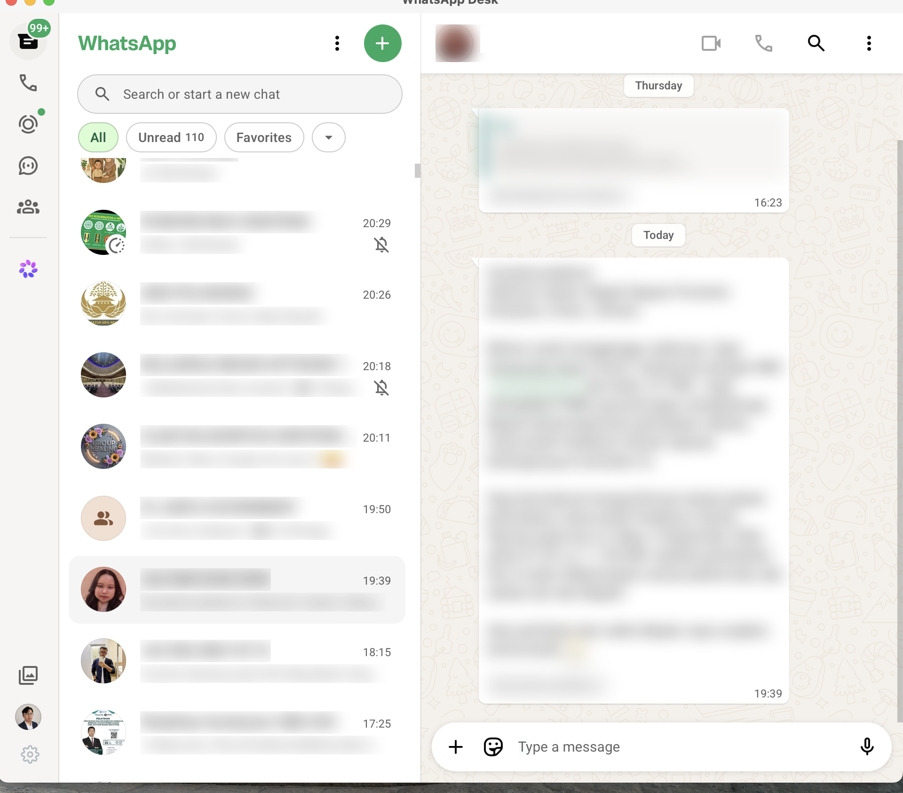
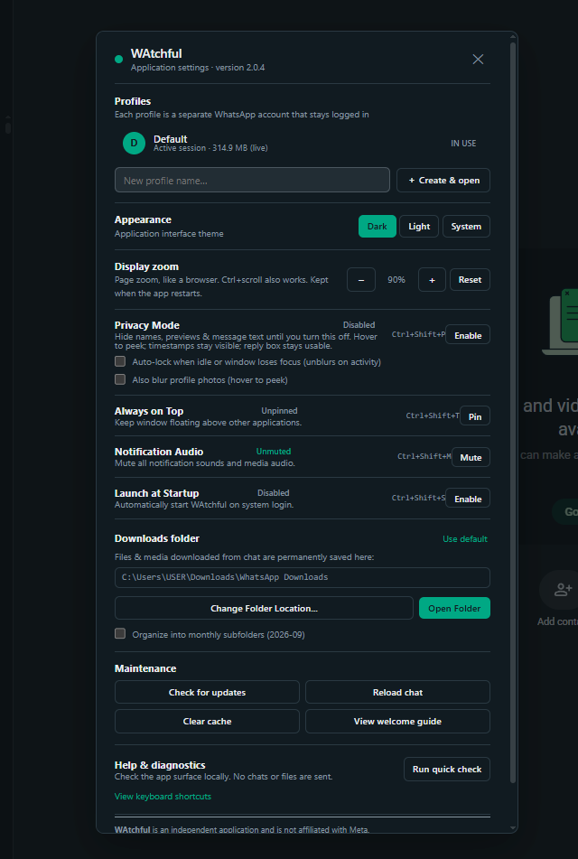

macOS
Apple Silicon dan Intel, dipasang lewat DMG.
Semua kekuatan WhatsApp Web dalam satu jendela desktop yang rapi: multi-profil, balas otomatis AFK yang bisa Anda batasi, jadwal berulang, pratinjau dokumen, dan pembaruan sendiri.
Mendeteksi platform Anda…

Enam bidang yang paling sering dipilih: apa yang berubah, dan mana yang hanya berjalan di belakang layar.

Catatan rilis terbaru
Semua perbaikan ini sudah ada di v2.0.14 — bukan Vaporware.
Direct Chat punya tombol sendiri di strip judul, juga tersedia lewat Ctrl/Cmd+Shift+C, sehingga nomor baru bisa dikunci tanpa disimpan ke kontak.
Dua slur yang menjalankan semuanya: jam boleh membalas, dan siapa yang boleh dibalas. Keduanya murni, transparan, dan bisa diuji tanpa menunggu pesan masuk.
Tidak. WAtchful memakai mesin web bawaan sistem dan tidak punya server analitik atau relay pesan. Pemeriksaan pembaruan hanya contacting GitHub, tanpa isi chat.
Tidak. Login biasa seperti di WhatsApp Web, per profil. WAtchful hanya membungkusnya jadi jendela desktop.
WAtchful memeriksa rilis baru segera setelah mulai dan setiap 4 jam, lalu mengunduh, memasang, dan memulai ulang dirinya sendiri — Anda hanya menyetujui banner. Kalau tidak suka, unduh manual dari halaman ini.
Bisa. Setiap profil punya tab sendiri dengan folder data terisolasi; tab tersembunyi otomatis ditangguhkan agar hemat CPU dan RAM.
Fitur AFK punya daftar izin: isi nama atau nomor chat yang boleh dibalas otomatis. Yang tidak ada di daftar dilewati tanpa dibuka, dan tercatat di log AFK sebagai skipped.
Deteksi platform di atas sudah memilih yang tepat. Semua build tersedia manual di bawah ini.
Apple Silicon dan Intel, dipasang lewat DMG.
Windows 10/11, butuh WebView2 (umumnya sudah terpasang).
Debian/Ubuntu, Fedora/RHEL, atau arsip portabel.
Paket DEB atau arsip portabel untuk mesin ARM64.
WAtchful gratis dan sumber terbuka. Kalau Anda membantu, tombol Donate di strip judul — atau klik di sini — membuka Saweria.